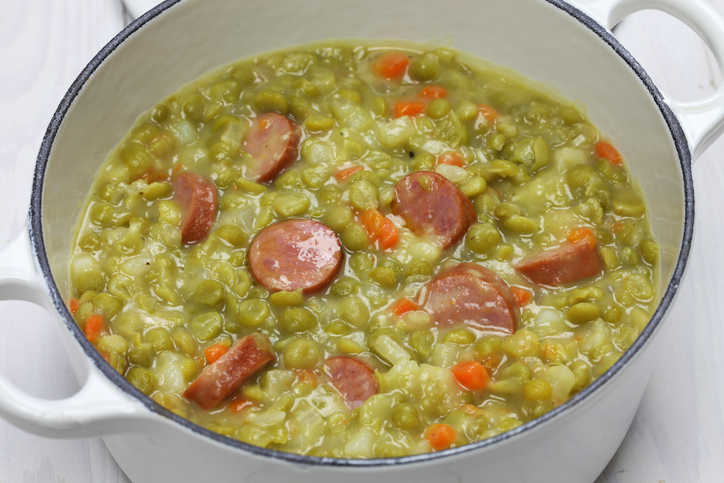

Snert

description
Snert is a great soup for when its cold
ingridients
- 1 potato
- 1 onion
- 250g split peas
- 150g carrot
- 200g celeriac
- 1 leak
- 20g leaf celery
- salt
- pepper
- 1 bay leaf
- 1l water
- Put the split peas in a big pot with the water and let it boil for 30 minutes
- Chop the celeriac, potato, carrot, leak, onion, and leaf celery, and add them to the pot
- Add the bay leaf, and some salt and pepper. Boil for another 90 minutes.
- Leave for 24 hours